Abra o Studio e escolha BASEPLATE

Foto da tela.
Projeto novo. Role a página para baixo até a fileira Abrir um modelo e clique no primeiro, o Baseplate.
- Abriu o projeto antigo
- Feche a aba e volte para o Início.
Vá para a aba MODELO
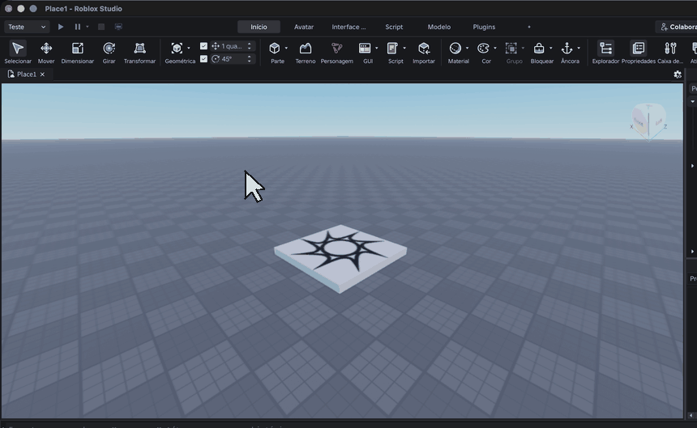
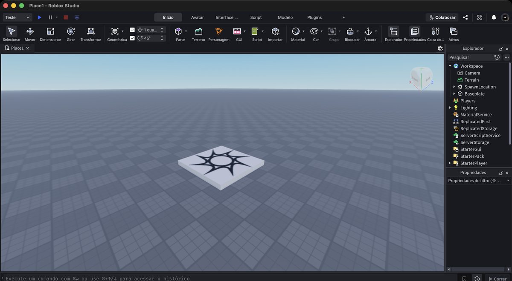
O clipe repete sozinho. Repare onde o cursor vai antes de clicar.
Clique em Modelo.
- Não acho
- Fica entre Script e Plugins.
Refaça o placar
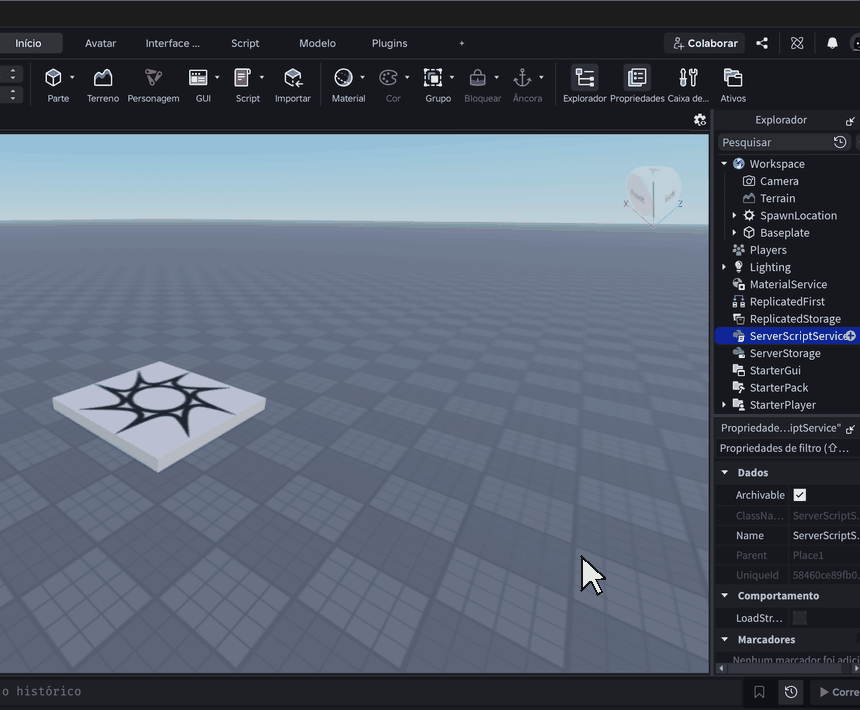
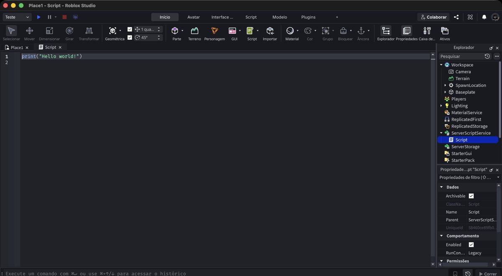
O clipe repete sozinho. Repare onde o cursor vai antes de clicar.
Role a lista até ServerScriptService, clique nele, clique no + e escolha Script.
- Não acho ServerScriptService
- Escreva server na caixa Pesquisar do Explorador.
- Esqueci como era
- Está tudo na Aula 5, passos 3 e 4.
Escreva o placar
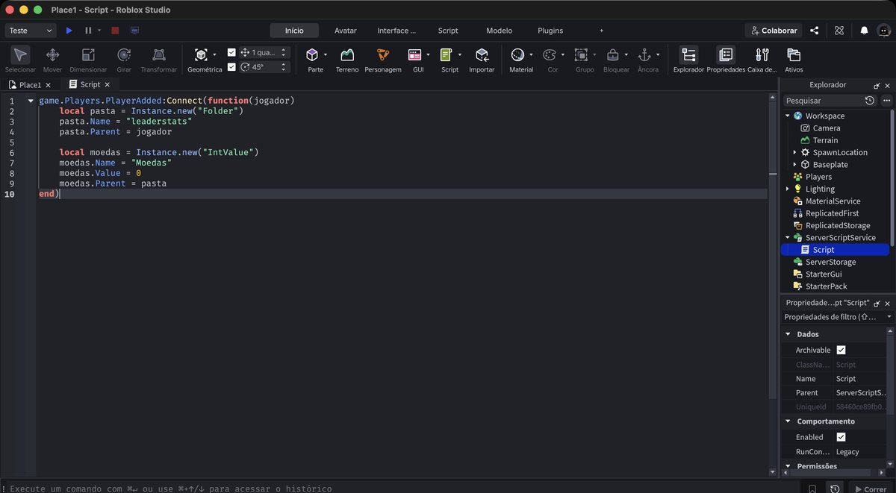
Foto da tela.
O mesmo código da Aula 5. Apague a linha pronta e escreva:
- game.Players.PlayerAdded:Connect(function(jogador)
- local pasta = Instance.new("Folder")
- pasta.Name = "leaderstats"
- pasta.Parent = jogador
- local moedas = Instance.new("IntValue")
- moedas.Name = "Moedas"
- moedas.Value = 0
- moedas.Parent = pasta
- end)
Se você guardou o arquivo da Aula 5, pode abrir lá e copiar. Mas escrever de novo grava melhor.
Não digite as linhas em cinza. O editor escreve os end sozinho quando você aperta Enter. E não aperte Tab — ele já empurra as linhas para dentro.
- Sobraram end a mais
- Você digitou os que o editor já tinha escrito. Apague os extras até o código ficar igual ao da aula.
- Leaderstats não funciona
- É leaderstats, tudo minúsculo, entre aspas.
- Risco vermelho no fim
- Falta o end).
Crie a moeda
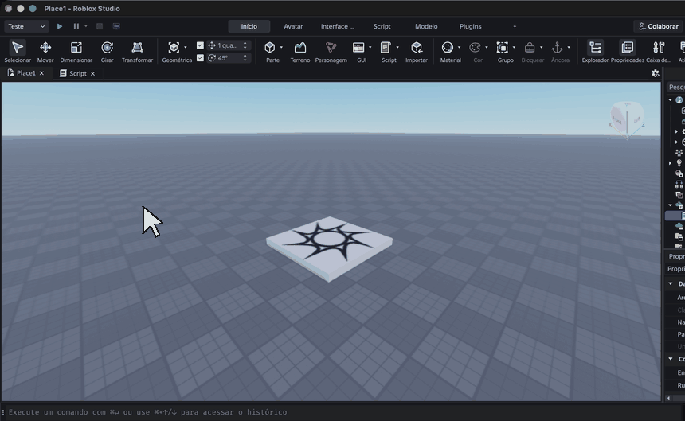
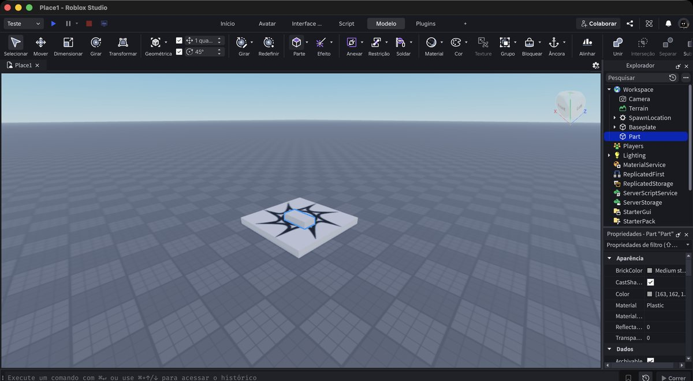
O clipe repete sozinho. Repare onde o cursor vai antes de clicar.
Volte para a aba Place1. Clique no desenho do Parte, depois leve a câmera até ela (F, depois S).
- Nada aconteceu
- Você clicou na palavra, não no desenho.
Ancore e posicione
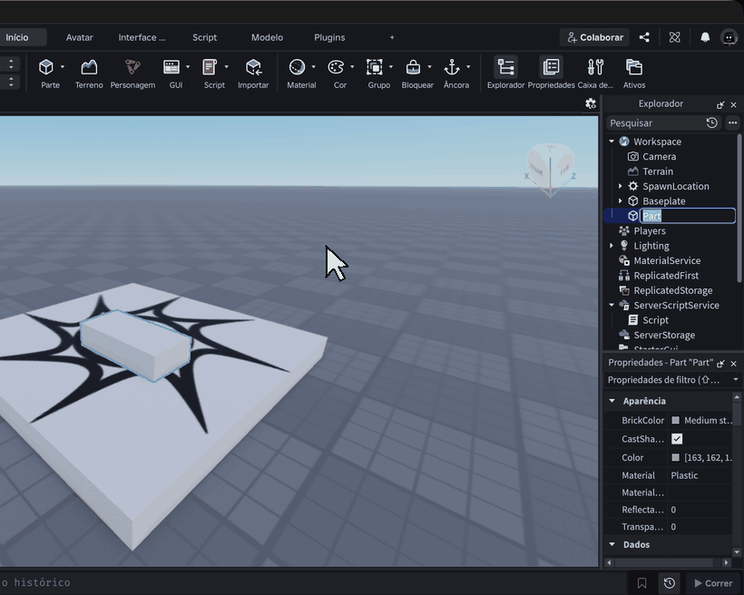
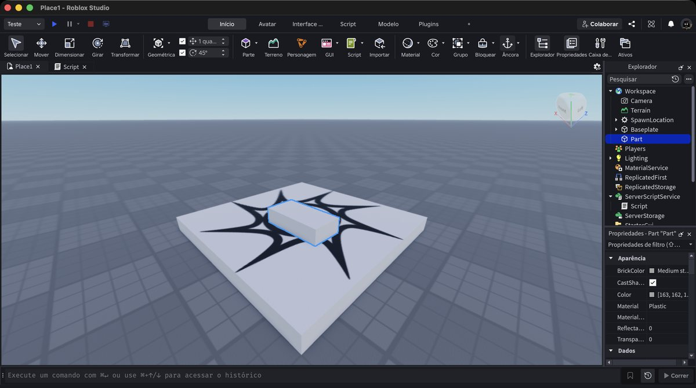
O clipe repete sozinho. Repare onde o cursor vai antes de clicar.
Clique em Âncora.
Depois, na busca das Propriedades, escreva position e ponha 0, 3, -6: a moeda fica logo à frente de onde você nasce.
- Aparecem três linhas Position
- Use a primeira, embaixo de CFrame.
- A moeda ficou no chão
- O número do meio é a altura. Use 3.
Pinte de amarelo e chame de MOEDA
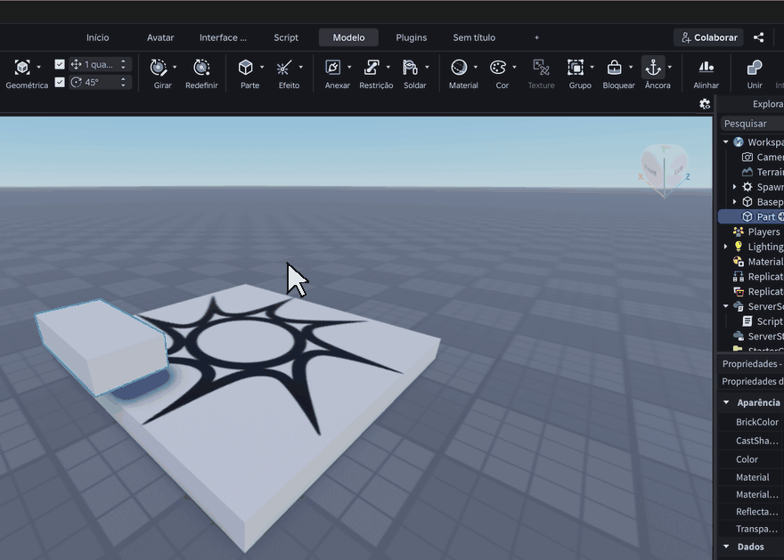
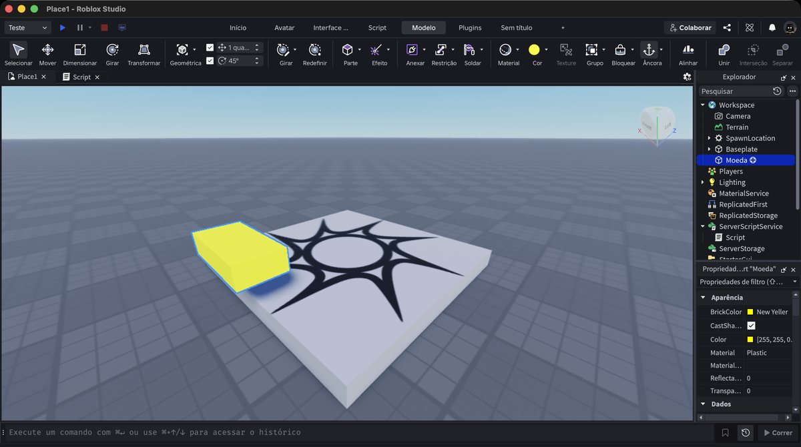
O clipe repete sozinho. Repare onde o cursor vai antes de clicar.
Setinha do Cor → amarelo → clique no círculo do botão Cor.
Depois botão direito na peça → Renomear → Moeda → Enter.
- Não pintou
- Falta o clique no círculo do botão Cor.
Ponha o script na moeda
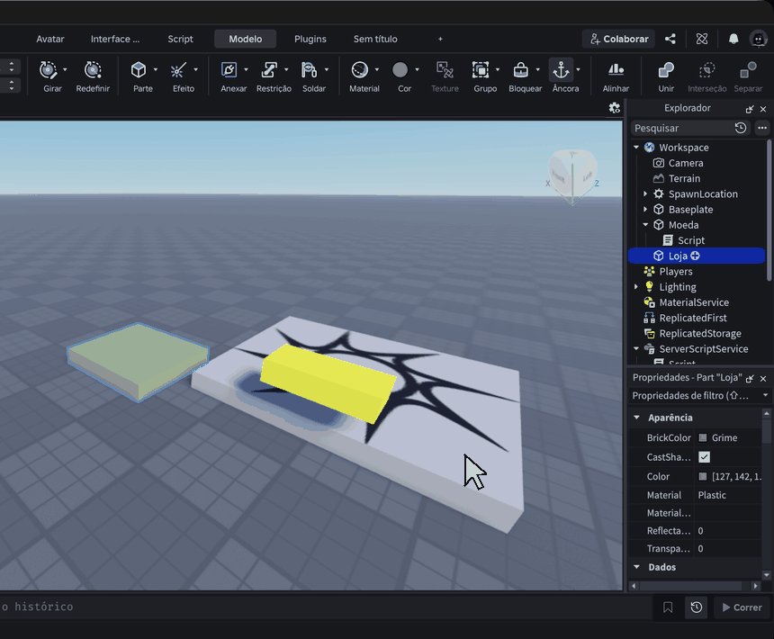
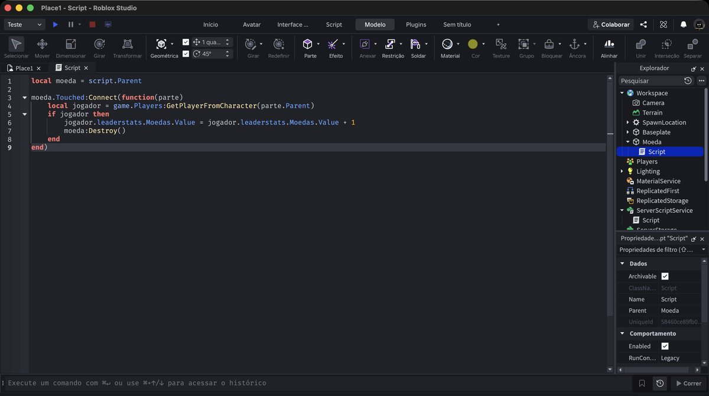
O clipe repete sozinho. Repare onde o cursor vai antes de clicar.
Clique em Moeda, clique no +, escolha Script, apague a linha pronta e escreva:
- local moeda = script.Parent
- moeda.Touched:Connect(function(parte)
- local jogador = game.Players:GetPlayerFromCharacter(parte.Parent)
- if jogador then
- jogador.leaderstats.Moedas.Value = jogador.leaderstats.Moedas.Value + 1
- moeda:Destroy()
- end
- end)
Também é o mesmo da Aula 5. Cada moeda vale um ponto e se apaga depois.
Não digite as linhas em cinza. O editor escreve os end sozinho quando você aperta Enter. E não aperte Tab — ele já empurra as linhas para dentro.
- Sobraram end a mais
- Você digitou os que o editor já tinha escrito. Apague os extras até o código ficar igual ao da aula.
- GetPlayerFromCharacter dá erro
- Confira as maiúsculas: G, P, F, C.
Faça três moedas
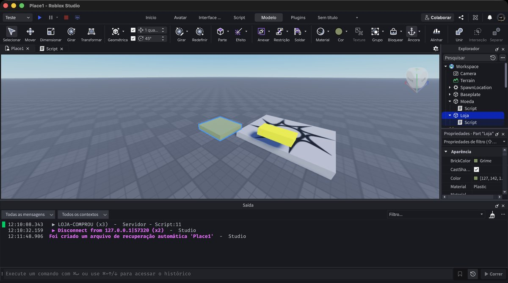
Foto da tela.
Botão direito na Moeda → Duplicar, duas vezes.
Mude a position das cópias para 3, 3, -6 e -3, 3, -6, para ficarem lado a lado.
Você vai precisar de três moedas para comprar na loja.
- As cópias ficaram uma dentro da outra
- Mude a position de cada uma. O primeiro número é para os lados.
- A cópia não soma ponto
- Você duplicou antes de pôr o script. Apague e duplique a que tem o Script dentro.
Crie a loja
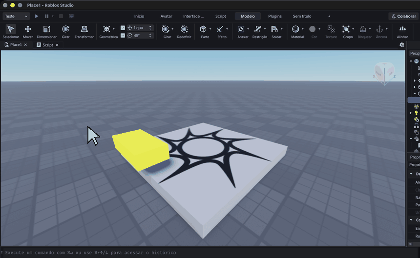
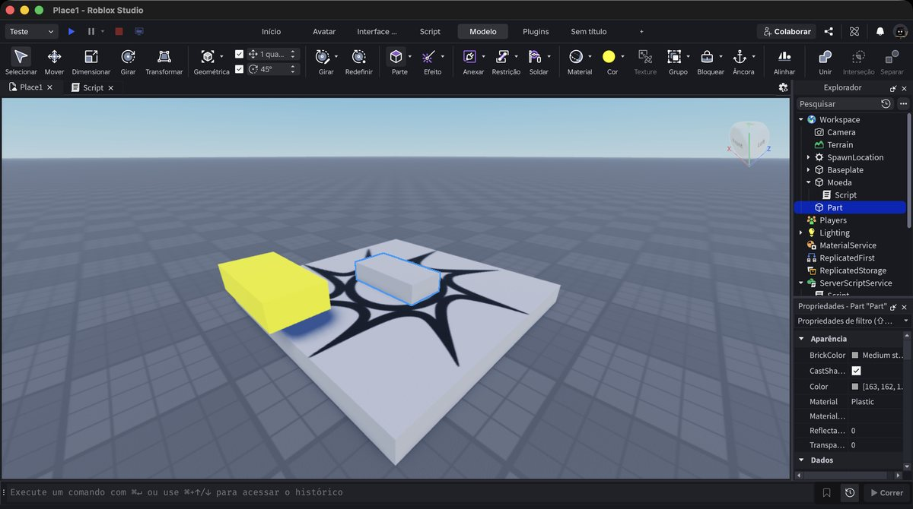
O clipe repete sozinho. Repare onde o cursor vai antes de clicar.
Mais uma peça: Parte → Âncora.
Depois size = 6, 1, 6 e position = 10, 0.5, -6. Fica uma plataforma quadrada, do lado.
- Ficou em cima das moedas
- O primeiro número do position é para os lados. Use 10.
- Esqueci de ancorar
- Clique nela e em Âncora.
Pinte de verde e chame de LOJA
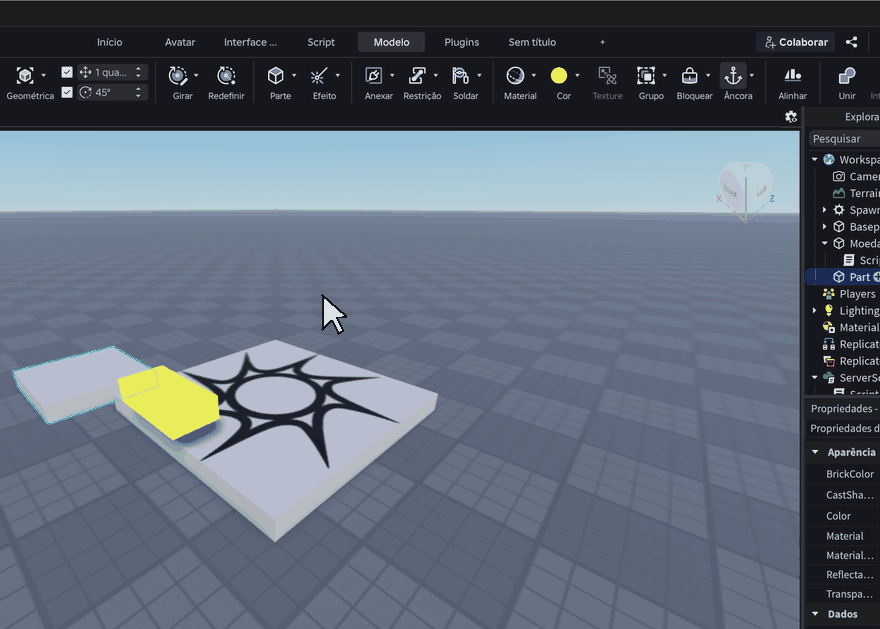
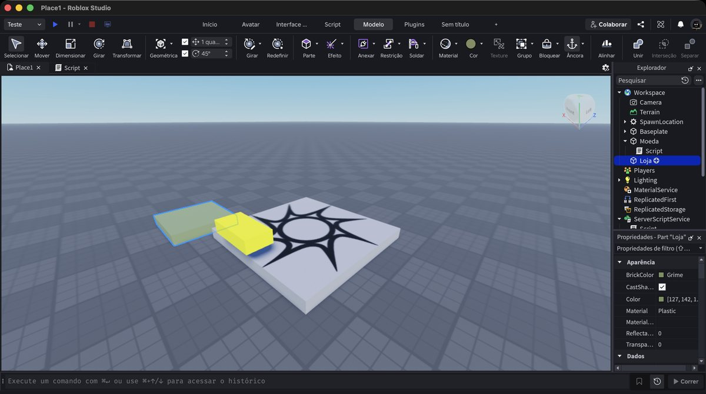
O clipe repete sozinho. Repare onde o cursor vai antes de clicar.
Setinha do Cor → verde → círculo do botão Cor.
Botão direito → Renomear → Loja → Enter.
- Pintei a peça errada
- Ctrl + Z e repita na certa.
Ponha o script na loja
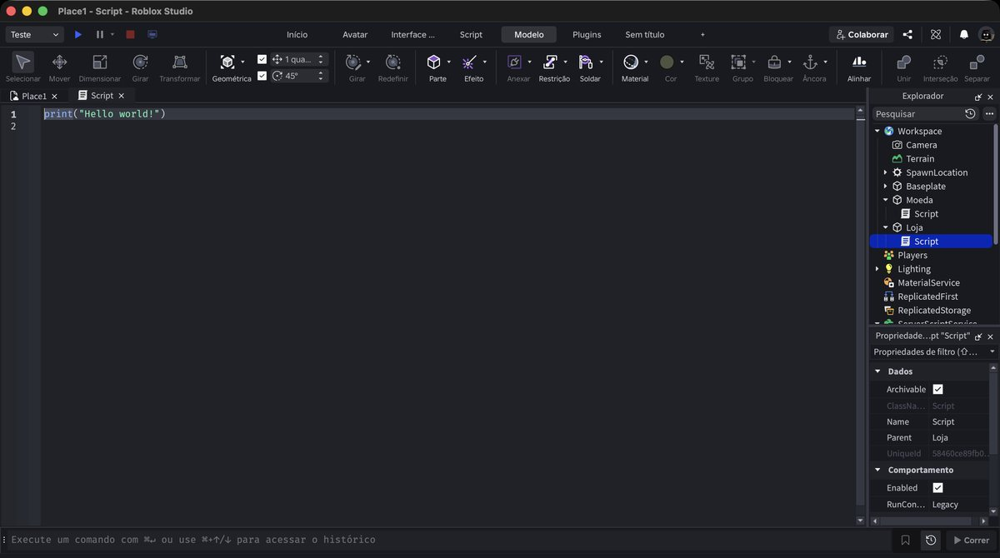
Foto da tela.
Clique em Loja, clique no + e escolha Script. Apague a linha pronta.
Este é o código importante da aula. Vem no próximo passo.
- Ficou fora da Loja
- Arraste-o por cima da palavra Loja na lista.
Escreva a loja
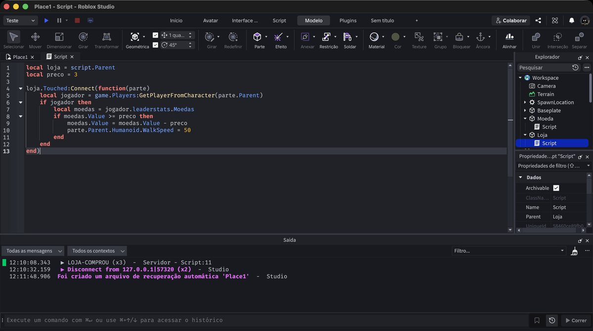
Foto da tela.
Treze linhas. Repare que existe um if dentro do outro:
- local loja = script.Parent
- local preco = 3
- loja.Touched:Connect(function(parte)
- local jogador = game.Players:GetPlayerFromCharacter(parte.Parent)
- if jogador then
- local moedas = jogador.leaderstats.Moedas
- if moedas.Value >= preco then
- moedas.Value = moedas.Value - preco
- parte.Parent.Humanoid.WalkSpeed = 50
- end
- end
- end)
O primeiro if pergunta “é um jogador?”. O segundo pergunta “ele tem dinheiro?”. São três end no fim, e o último com ).
Não digite as linhas em cinza. O editor escreve os end sozinho quando você aperta Enter. E não aperte Tab — ele já empurra as linhas para dentro.
- Sobraram end a mais
- Você digitou os que o editor já tinha escrito. Apague os extras até o código ficar igual ao da aula.
- Risco vermelho no fim
- Conte os end: são três, e o último é end).
- A indentação saiu diferente
- O editor recua sozinho. Não use Tab — ele serve para outra coisa. Se ficou torto, apague a linha e escreva de novo.
- O que é >= ?
- É “maior ou igual”. Dois símbolos, sem espaço entre eles.
Entenda a decisão
Foto da tela.
local preco = 3 — guarda o número 3 com o nome preco. Assim, se você quiser mudar o preço, muda num lugar só.
if moedas.Value >= preco then — “se o que ele tem for maior ou igual ao preço…”. É aqui que o código decide.
moedas.Value = moedas.Value - preco — cobra: tira 3 do que ele tinha.
Humanoid.WalkSpeed = 50 — entrega o produto. A velocidade normal é 16; 50 é correr muito.
E se não tiver as três moedas? Nada acontece. O código simplesmente pula tudo que está dentro do if.
- Por que usar preco em vez de 3 direto?
- Porque aparece duas vezes. Com um nome só, você muda o preço num lugar e vale nos dois.
Jogue: tente comprar sem dinheiro
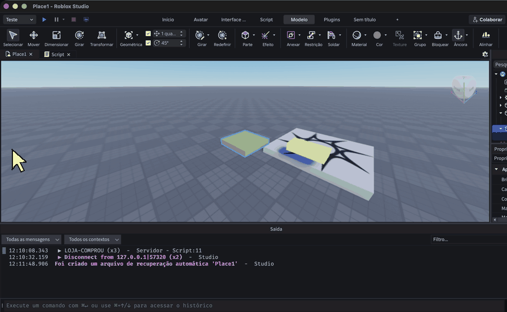
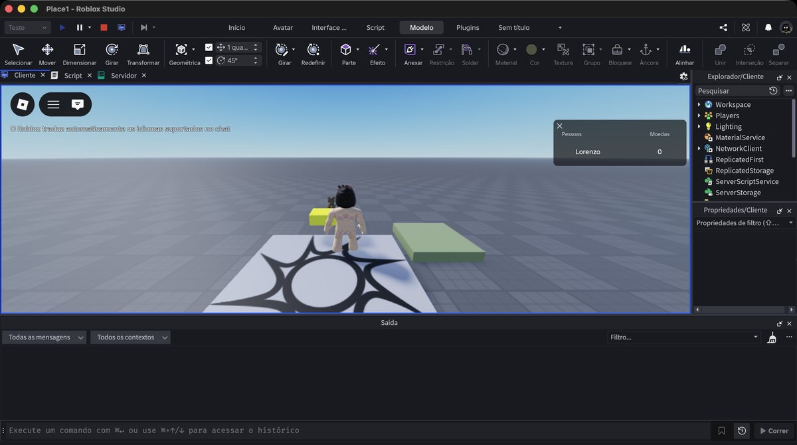
O clipe repete sozinho. Repare onde o cursor vai antes de clicar.
Volte para Place1 e aperte o ▶.
Vá direto para a plataforma verde, sem pegar moeda nenhuma. Pise nela.
- Ficou rápido mesmo sem moeda
- O >= está errado, ou o preço está 0. Confira a linha do if.
- Deu erro vermelho na tela
- Provavelmente o placar. Confira o leaderstats no script do ServerScriptService.
Agora pegue as três moedas
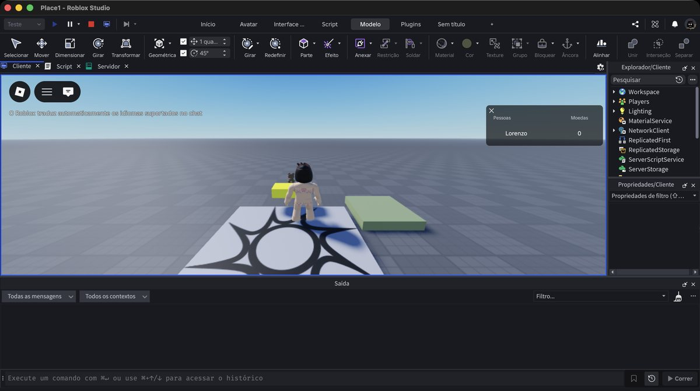
Foto da tela.
Pegue as três moedas — o placar vai para 3 — e volte para a plataforma verde.
- O placar zerou mas não fiquei rápido
- Confira a linha do WalkSpeed: é parte.Parent.Humanoid.WalkSpeed.
- Fiquei rápido mas o placar não mudou
- Faltou a linha que subtrai o preço.
- Peguei só duas moedas e funcionou
- O preço no código não é 3. Confira a linha 2.
Mude o preço
Foto da tela.
Pare o jogo. Troque local preco = 3 por local preco = 1 e jogue de novo.
Uma moeda já compra. Depois experimente 10 — aí não dá para comprar com as três moedas que existem.
- Mudei e nada
- Você mudou com o jogo rodando. Pare, mude, jogue.
Venda outra coisa
Foto da tela.
Troque a linha do WalkSpeed por uma destas:
parte.Parent.Humanoid.JumpHeight = 25 — pulo alto
parte.Parent.Humanoid.MaxHealth = 200 — mais vida
Ou duplique a Loja, mude o nome e o preço, e faça duas lojas com produtos diferentes.
- JumpHeight não funciona
- Escreva com J e H maiúsculos, exatamente assim.
- As duas lojas fazem a mesma coisa
- Você duplicou e não mudou o script da cópia.
Salve
Foto da tela.
Ctrl + S → Salvar em arquivo → nome loja.
E publique, se quiser: Arquivo → Publicar na Roblox.
- Esqueci como publica
- Aula 4, passo 9.